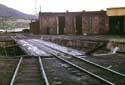
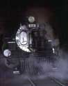
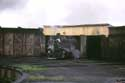
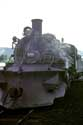
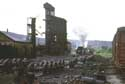
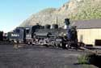
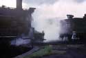
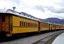
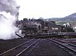
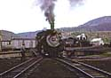

+ One+ Two+ Three
+ Four +
+ Back to the Durango and Silverton +


All photographs ©1998, Don Winslow. Used with permission.
web pages ©1998 blanchard design,
all rights reserved
Last update: 98-05-04